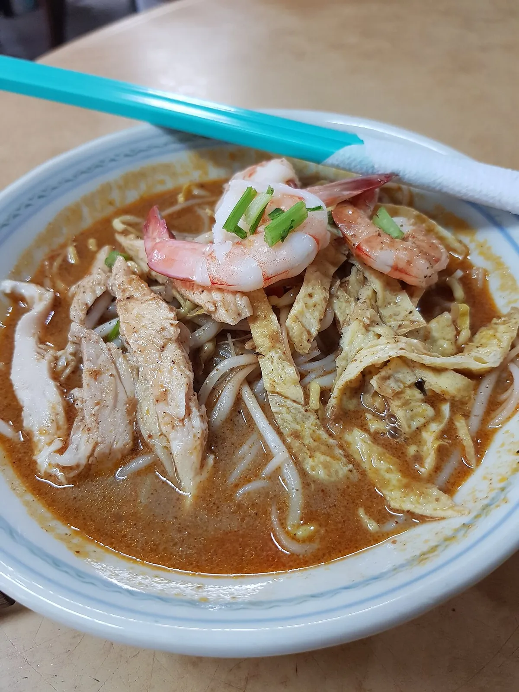
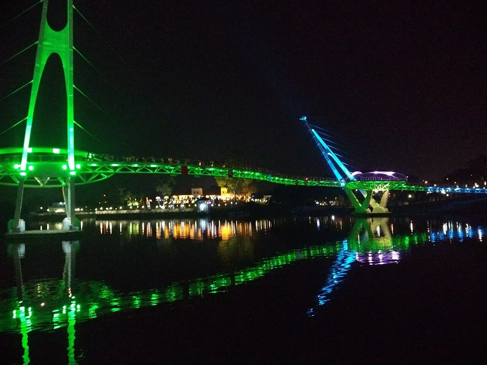
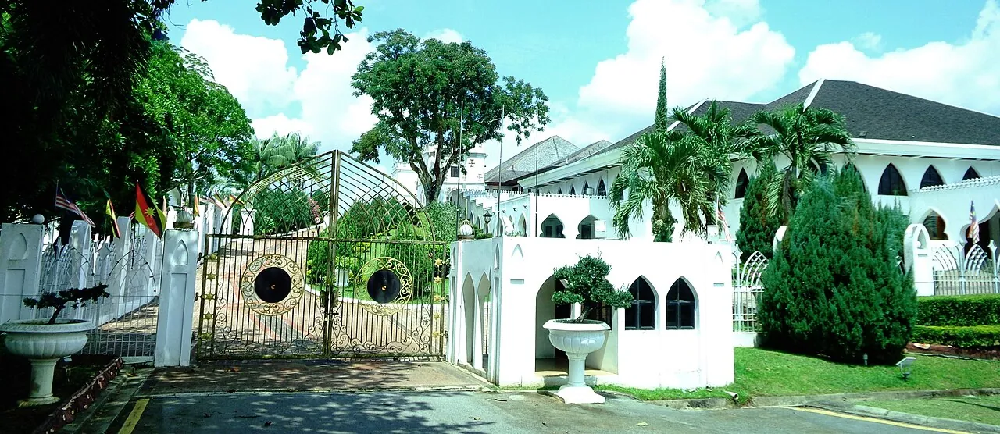
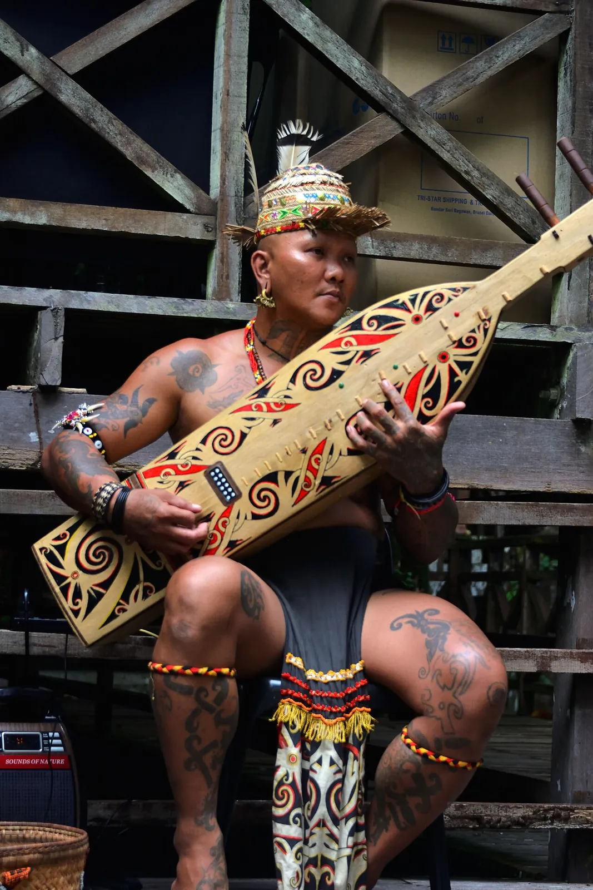
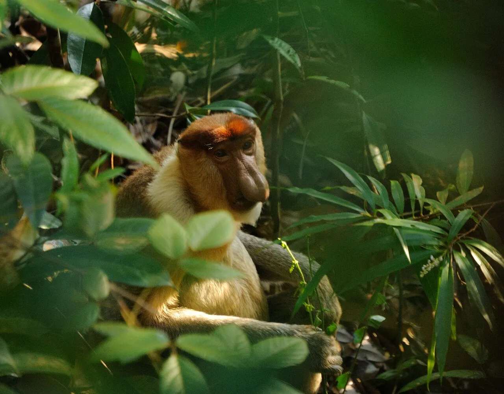
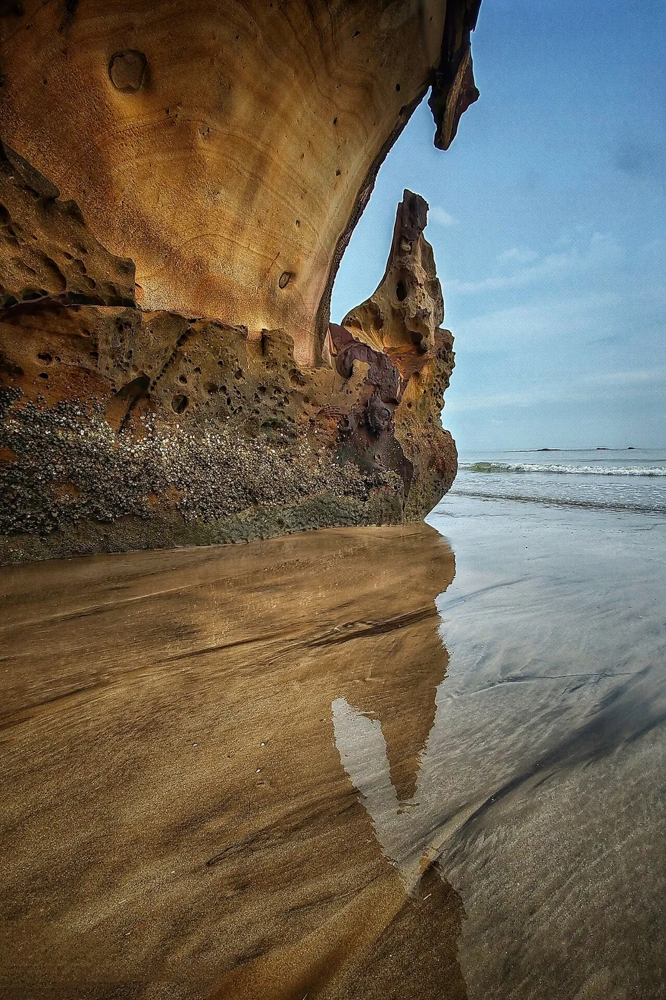
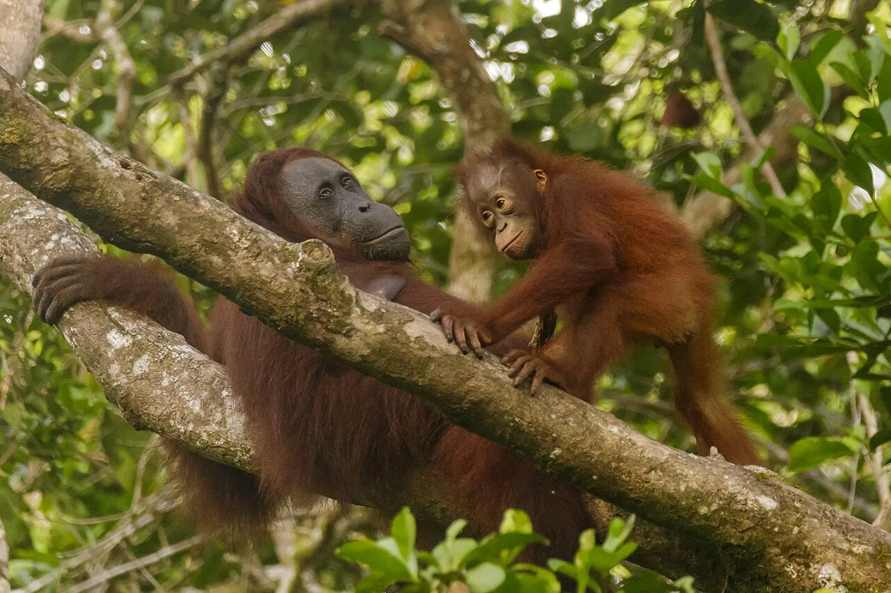
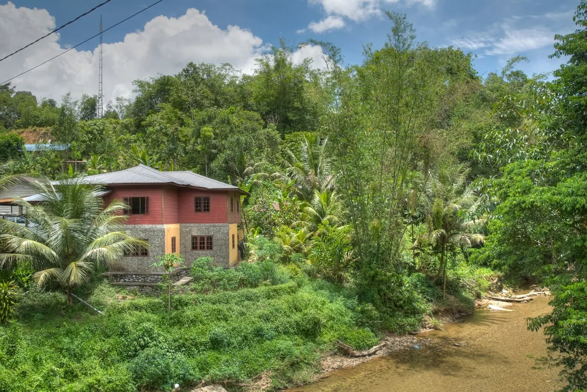

Borneo · Sarawak · Malaysia
Three nights in
Kuching
One riverside bed, the whole of Sarawak orbiting it. Orangutans, proboscis monkeys, a UNESCO laksa breakfast and a Bidayuh longhouse — laid out as a day-by-day plan you can actually walk.
When to go
Time it for the dry side of the rain
Kuching is the wettest city in Malaysia — about 247 rainy days a year, with January peaking near 660 mm.[7] Aim for April–September; June–August is driest and festival-heavy.[6] Bar height ≈ relative wetness.
Do these five and you've done it right
The trip in five moves
Everything below threads these into a sequence. Each is also the headline of a deeper axis page.
Bako wildlife
A full day at Bako National Park for wild proboscis monkeys, bearded pigs and Sarawak's oldest rainforest.[1]
Semenggoh apes
The orangutan feeding (9am & 3pm, RM10) — near-guaranteed great apes a half-hour from town.[2]
Sunset cruise
The Sarawak River sunset cruise (5.30pm daily, ~RM70) with layer cake and sape music.[4]
Annah Rais
A day at the Bidayuh longhouse — bamboo architecture, 80+ families, lunch and tuak on the tanju.[5]
The plan, hour by hour
One base, four moves & out
Most of Sarawak's icons orbit a single Kuching bed, so base in the Old Town and day-trip out. Logistics live in the Around & Day-Trips survey.

Arrival · settle in
Land, drop bags, eat laksa



Day 1 · Old Town & river
The heritage core, on foot
- Walk Main Bazaar, then the Borneo Cultures Museum — Malaysia's largest (RM50).[17]
- Take a RM1 tambang across to Fort Margherita / the Brooke Gallery (RM30).[18]
- Catch the Darul Hana Bridge lit at dusk,[19] then the sunset cruise.[4]
- Dinner at Top Spot — the rooftop pick-your-own seafood court.[20]


Day 2 · Bako National Park
Full day in the wild


Day 3 · Orangutans & longhouse
Great apes, then a Bidayuh feast
At a glance
Everything orbits one bed
You never change hotels. Each icon is a half- or full-day spoke out from the Old Town and back.
Bako NP
Proboscis monkeys, bearded pigs, sea-cliff rainforest. Last boat ~3pm.
Semenggoh
Semi-wild orangutan feeding, RM10, ~30 min from town.
Annah Rais
Bidayuh bamboo longhouse, 80+ families, ethnic lunch.
Fairy & Wind Caves
Limestone caverns west of town — Fairy shuts Mon, Wind shuts Tue.[23]
KUCHING
Your single Old-Town base for all three nights
Old Town core
Main Bazaar, museums, forts, temples — all on foot.
Money & logistics
What a comfortable couple-day costs
Currency is the ringgit at ~RM5 to the euro; the Old Town is fully walkable and Grab covers the rest.
Connectivity
Grab a local eSIM at the airport — city coverage is fine for maps and ride-hailing.
Etiquette
Dress modestly at mosques and temples, remove shoes in longhouses, and accept the welcome tuak graciously.[13]
Grab thins out
Returning from Semenggoh, Bako village or Santubong, cars get scarce — pre-book or ask your driver to wait.[14]
Staggered closures
Fairy Cave shuts Mondays, Wind Cave Tuesdays;[23] the Annah Rais hot springs have stayed closed since Covid.[24]
Travel lightly
Choose Semenggoh's rehabilitation and Bako's wild sightings over caged animals; refill water; tread gently — longhouses are homes, not sets.
Go deeper
Seven axes behind the plan
This itinerary is the synthesis. Each move above expands into its own guide.
Eat
Laksa legends, kolo mee, jungle-fern midin, Dayak bamboo chicken, layer cake, rooftop seafood.
Sleep
Restored Old-Town shophouses, rainforest treehouses, plus longhouse and homestay nights.
Do
The unmissable trio plus the full menu of river, cave, jungle and coast activities.
See
Waterfront icons, cat statues, forts, museums, temples and UNESCO caves, tagged by zone.
Offbeat
Two dozen quirky finds — oddball museums, hidden bars, jungle markets, headhunter villages.
Culture
Museums, dated festivals, markets and craft workshops — what to see and when.
Around & Day-Trips
Flights in/out, getting around on foot, Grab and river taxi, and the half- and full-day orbit.
Field notes
Sources
26 references behind the synthesis, parsed from the canonical guide.